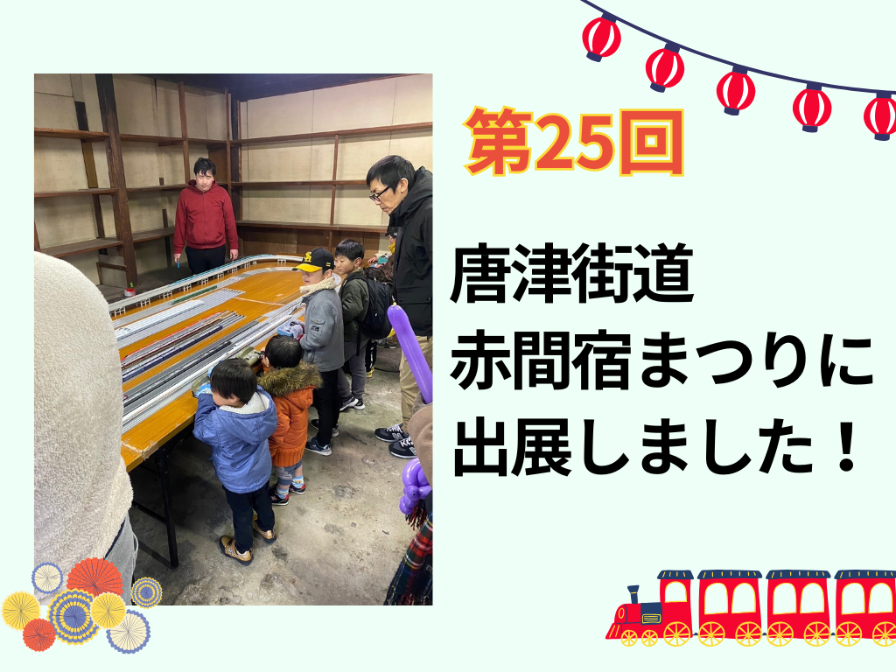
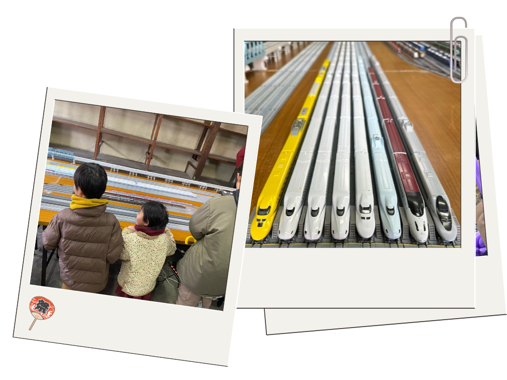

活動レポート
第25回 唐津街道 赤間宿まつりに出展しました！

2日間で、のべ1000名以上のお客さまにご来場いただきました！
2025年2月22~23日に福岡県宗像市で開催された赤間宿まつりに、ひなてくよりイベント出展をさせていただきました！
かつてお菓子の製造、卸、小売販売を営まれていた枡屋さんにて、鉄道模型の運転体験イベントを実施いたしました。
赤間を駆け抜ける在来線特急ソニック、にちりんシーガイア、普通電車をはじめ、ゆふいんの森号なども展示致しました。
また、東海道山陽九州新幹線を走るのぞみ/ひかり、みずほ/さくら、つばめ、こだま号などの展示も致しました。
なかでも、ドクターイエローの人気は非常に高く多くのお客さまに喜んでいただけた展示となりました！
レイアウトの奥行きは5mを超え、ご家庭で走らせるのはなかなか難しい16両の新幹線車両も悠々と走行する姿を見せました。
今回のイベントでは、6線の各線の車両を操縦できるコントローラーを無料開放し、特にお子さまに好評を博しました。
2日間でのべ1000名を超えるお客さまにご来場いただき、開催時間中はお客さまがほぼ絶えることない様子でした。
かつて駄菓子屋さんとして多くのお子さまの賑わう声が聞かれた枡屋さんに、久々にお子さまの歓声が響く日になったことと思います。
ひなてくでは、このような多くの家族連れのお客さまにお越しいただけるイベントを実施しております。
ご用命がございましたら、ぜひお気軽にお問合せください！ 